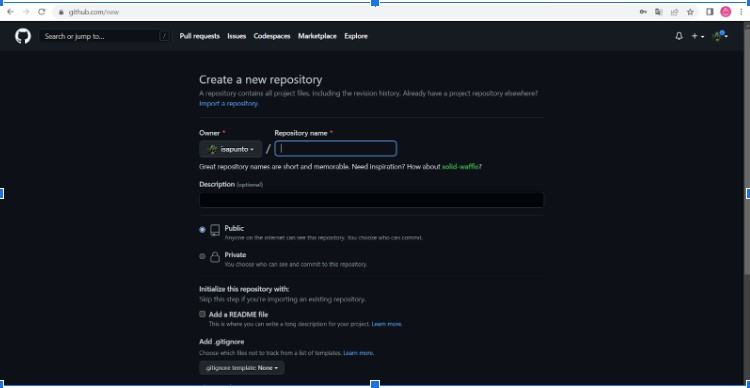
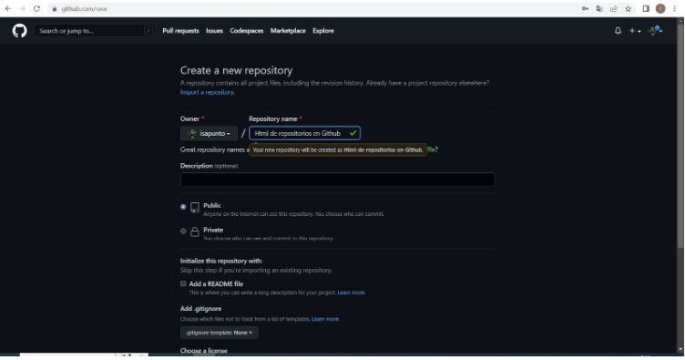
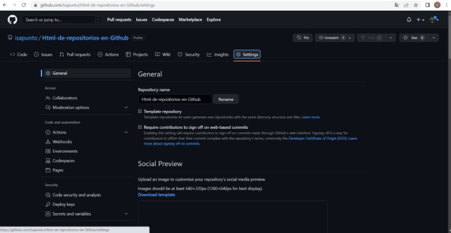
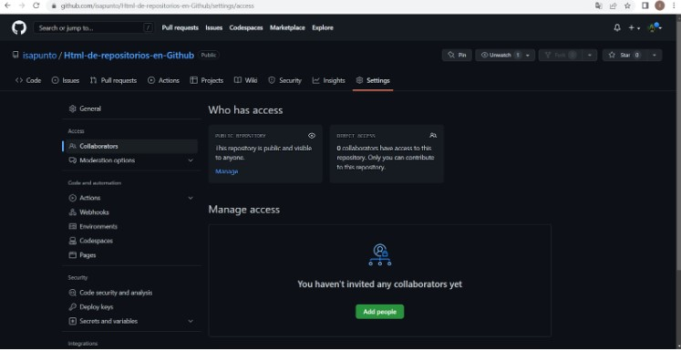
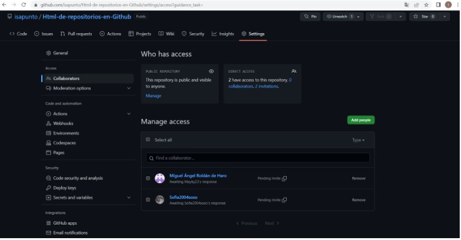
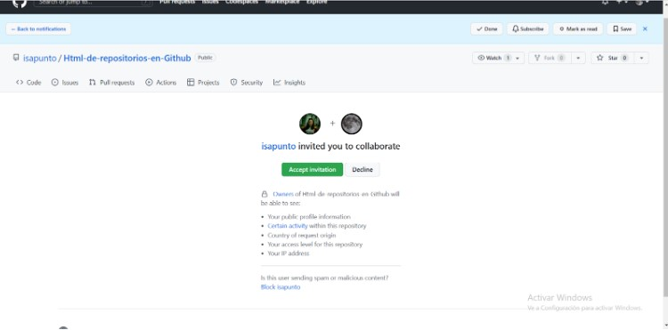
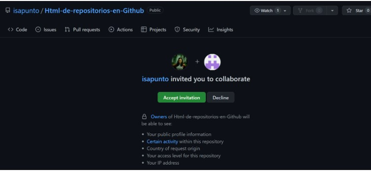

CREANDO EL REPOSITORIO
Una vez que hemos iniciado sesión hacemos click en "Repositories"/"New"
Añadimos un nombre para nuestro repositorio, elegimos si es público o privado y configuramos según nuetras preferencias y guardamos
INVITAMOS COLABORADORES
Dentro de nuestro repositorio hacemos click en "Settings"
En la parte izquierda hacemos click en "Collaborators"
Y hacemos click en "Add people", a continuación aparece una opción para introducir el usuario, email o nombre completo de la persona que quieres añadir.
En "Manage access" encontramos los participantes.
Aquí podemos ver la invitación que reciben los colaboradores, sólo tienen que aceptar y listo.
 Hasta aqui el tutorial sobre como crear un repositorio y compartirlo con mas gente en Github, es bastante sencillo y tiene grandes beneficios, como permitir el trabajo en equipo, tambien los colaboradores pueden trabajar simultáneamente en diferentes partes del proyecto, lo que puede aumentar la velocidad y la eficiencia del desarrollo, permitiendo tener un control de versiones sobre nuestro proyecto.